¡Cuéntamelo todo…. pero con mates!
¿Te imaginas poder leer miles, o cientos de miles, de artículos o publicaciones en segundos?, ¿ser capaz de identificar temas, clasificar los documentos con base en su contenido, crear redes que nos ayuden a entender las relaciones entre los documentos e incluso explorar las emociones asociadas a cada publicación o tema de discusión? Suena atrevido, ¿verdad?
La minería de textos (text mining) es una rama de la Ciencia de Datos que nos ayuda a extraer información útil y patrones significativos de grandes volúmenes de texto no estructurado; es decir, texto que no sigue un formato predefinido, correos electrónicos, redes sociales, artículos, chats o documentos PDF. Esta disciplina combina técnicas de lingüística, estadística e inteligencia artificial para analizar los documentos, identificar tendencias, clasificar contenido y descubrir relaciones ocultas entre conceptos, temas y subtemas de contenido.
Al extraer patrones en el lenguaje que reflejan actitudes, emociones y comportamientos colectivos, la minería de datos nos ofrece una visión cuantitativa y cualitativa de los procesos sociales, ayudándonos a comprender dinámicas sociales complejas, movimientos políticos, cambios de opinión y fenómenos globales de forma rápida, económica y a escala masiva.
En nuestro mundo moderno, en el que los seres humanos dejamos registro de nuestras actividades y sentimientos en la red y volcamos todo nuestro conocimiento en Internet, la minería de textos se ha convertido en una herramienta invaluable para la disciplinas como la sociología y la psicología, la antropología y ciencias políticas, pues nos ayuda a mejorar la comprensión del comportamiento humano en contextos específicos y en tiempo real. En este contexto, las redes sociales se han convertido en una fuente de información increíblemente valiosa que nos permite conducir análisis cualitativos y cuantitativos a gran escala.
El mastodonte de las redes sociales
Mastodon es una red social descentralizada y de código abierto, similar a Twitter (ahora X) o Facebook, pero sin pertenecer a ninguna compañía ni corporación.
Mastodon funciona a través de servidores independientes (instancias) que se comunican entre sí. Cada instancia funciona como una comunidad virtual independiente con libertad para establecer sus propias reglas de moderación de contenido. A la fecha de publicación de este post existen 9,858 instancias de Mastodon con casi 10 millones de usuarios registrados.
Al ser una red social descentralizada, Mastodon prioriza la privacidad, el control del usuario y la libertad de moderación dentro cada comunidad virtual. A diferencia de redes sociales corporativas, Mastodon se aleja de algoritmos publicitarios y de filtrado de contenido o censura centralizada. Estas propiedades hacen de Mastodon una importante fuente de información sin sesgos.
El señor de pelo color zanahoria y extraño copete…
Donald Trump es una figura pública controvertida. Su segunda presidencia comenzó el 20 de enero de 2025 cuando asumió su cargo como el 47.º presidente de los Estados Unidos. Su mandato se ha caracterizado por decisiones políticas inesperadas y la salida a la luz documentos que revelan altos niveles de corrupción gubernasmental a una escala insospechada.
En este post hemos decidido experimentar utilizando a “Donald Trump” como tema de discusión en un interesante ejercicio de minería de textos con Mastodon.
🦣 Conversando con el mastodonte
La librería rtoot de R nos permite conectarnos a Mastodon y descargar a nuestro entorno de programación las publicaciones (posts) públicas más recientes o bien aquellas que hayan sido etiquetadas utilizando hashtags.
Para este post utilizamos rtooth para descargar 20,000 publicaciones etiquetadas con el hastag #trump. Dentro de esta red social, cada publicación se denomina toot.
Como Mastodon es una red descentralizada, antes de descargar nada debemos elegir una instancia desde la cual obtendremos la información. En este caso hemos elegido la instancia mastodon.social ya que es el servidor más grande de la red, con más de 300,000 usuarios activos y más de 1.5 millones de cuentas registradas.
🔍 El objetivo de este análisis será identificar los temas de discusión relacionados con Donald Trump, descubrir aspectos emocionales asociados a ellos, así como su evolución en el tiempo.
Limpieza de los datos
Antes de comenzar con el análisis de temas de discusión, filtramos los toots para quedarnos únicamente con aquellos cuyo idioma de publicación fuera el inglés, lo que redujo el número de toots a 15,500. La fecha del primer toot recuperado, e incluido en el análisis, fue el 25 de enero de 2026, publicado a las 17:51 (hora de Madrid) y el último el 19 de febrero a las 12:14.
La extensión máxima de los toots fue de 1328 palabras, la mínima de 2, con una media de 60.77 y desviación estándar de 54.55.
En la minería de textos más básica, como la que desarrollaremos en este post, la materia prima del análisis son las palabras aisladas, llamadas tokens, que componen un documento. Sin embargo, no nos interesan TODAS las palabras, sino únicamente aquellas que contienen significado. Por ello, todos los determinantes, pronombres, conjunciones, preposiciones, nexos, números, signos de puntuación y caracteres distintos de letras que deben ser eliminados del texto. En la minería de textos, estas palabras sin significado se denominan stop words.
En el caso de Mastodon, los enlaces a páginas web o a otras publicaciones generan códigos HTLM que también deben ser eliminados.
Tras eliminar las stop words y códigos HTML, las palabras de un texto son separadas una a una, dando como resultado una tabla con el identificador de la publicación, el toot en nuestro caso, asociado a cada palabra.
Tabla 1. Estructura de una tabla de tokens | |
|---|---|
ID toot | Palabra |
116097288515549378 | lex |
116097288515549378 | classhashtag |
116097288515549378 | relnofollow |
116097288515549378 | noopener |
116097288515549378 | href |
116097288515549378 | targetblankprincea |
116097288515549378 | classhashtag |
116097288515549378 | relnofollow |
116097288515549378 | noopener |
116097288515549378 | href |
La Tabla 1 muestra las 10 primeras líneas de la tabla de datos que contiene los tokens asociados a cada al primer toot de nuestro conjunto. Un vistazo a la tabla nos revela al existencia de “palabras” que carecen por completo de significado. Estas “palabras” son etiquetas HTML utilizadas por Mastodon para distintos fines, y también deben ser eliminadas.
Para poder identificar estas etiquetas, haremos una lista de las palabras que aparecen con mayor frecuencia en todas las publicaciones (Tabla 2).
Tabla 2. Lista de las 20 palabras más comunes | ||
|---|---|---|
Posición | Palabra | n |
1 | href | 109,325 |
2 | noopener | 86,499 |
3 | relnofollow | 86,499 |
4 | classmention | 83,551 |
5 | hashtag | 83,469 |
6 | classinvisible | 11,319 |
7 | classhashtag | 10,517 |
8 | targetblankspantrumpspana | 7,649 |
9 | trump | 6,395 |
10 | targetblankspan | 5,963 |
11 | translateno | 5,783 |
12 | targetblank | 5,145 |
13 | translatenospan | 4,682 |
14 | reltagspantrumpspana | 3,270 |
15 | targetblanktrumpabrbra | 2,778 |
16 | trumps | 1,970 |
17 | epstein | 1,935 |
18 | donald | 1,909 |
19 | ice | 1,556 |
20 | amp | 1,511 |
La Tabla 2 nos muestra que, efectivamente, estas etiquetas HTML de Mastodon son las palabras que aparecen con mayor frecuencia en las publicaciones. A partir de la posición número 16, comienzan a aparecer palabras que sí parecen guardar relación con Donald Trump.
Para cada publicación, eliminamos los tokens correspondientes a las etiquetas HTML, así como las palabras “donald”, “trump” y “president”, puesto que nuestro conjunto de datos ya fue creado con el hastag #trump como tema principal.
A través de múltiples iteraciones identificamos “palabras” comunes que en realidad no guardan significado y las eliminamos de las lista de tokens de cada publicación (consultar el script de programación para ver la lista completa en el repositorio de La Casa de Datos en Github).
Tras esta limpieza exahustiva, y tras eliminar los tokens repetidos en cada publicación, el número total de tokens fue de 265977, con un total de 47279 palabras únicas. El número máximo de tokens por toot fue de 598 y el mínimo de 1. La media de tokens por toot fue de 17.7, con una desviación estándar de 24.21.
🖼️ Una imagen vale más que mil palabras…
Las nubes de palabras son una herramienta clásica de la minería de textos; nos ayudan a visualizar la frecuencia con la que aparece una palabra en u texto. Cuanto más común es una palabra en un texto más grande aparece en la nube. También podemos usar una escala de color ligada a su frecuencia. La Figura 1 muestra la nube de palabras asociadas a nuestro conjunto de toots.

Figura 1. Nube de palabras asociadas a Donald Trump, en publicaciones de Mastodon (mastodon.social) comprendidas entre el 25 de enero y el 19 de febrero de 2026. El tamaño de las palabras se corresponde con la frecuencia con la que aparecen en el conjunto de publicaciones.
En la Figura 1 vemos que algunas de las palabras que aparecen con mayor frecuencia son “epstien” e “ice”, seguidas de “amp” y “card”. El resto de palabras podrían asociarse simplemente a la administración del gobierno estadounidense y a temas de carácter general.
A fecha de la publicación de este post, el nombre de Epstein ha aparecido incontables veces en los medios de comunicación tradicionales y en las redes sociales, como un criminal con lazos con altos cargos del gobierno de Estados Unidos y otros países que manejaba una red chantaje basada en la prostitución y abuso de niños y adolescentes. Búsquedas simples en Internet usando los tériminos trump + ice, trump + amp y trump + card, nos revelan que “ice” se refiere a la agencia americana de aduanas e inmigración (Immigration and Customs Enforcement, ICE). “AMP” podría referirse a la asociación de Musulmanes Americanos por Palestina (American Muslims for Palestine, AMP). Card podría hacer referencia a la llamada “Trump Gold Card”, que es una forma acelerada de obtener la residencia americana de forma acelerada tras una contribución de 1 millón de dólares.
Las nubes de palabras no muestran su contexto y por si solas no son muy eficientes para ayudarnos a identificar temas de discusión. Esto se ve reflejado en la mayoría de las palabras de la Figura 1 podrían asociarse simplemente a temas administrativos del gobierno federal estadounidense.
🕸 Una de las debilidades de las nubes de palabras es que no muestran el contexto de las palabras. Por ello, recurrimos al análisis de redes para identificar con mayor precisión posibles temas de discusión.
🔬 Identificación de temas de discusión a través del análisis de redes
La librería igraph de R es una herramienta poderosa que nos permite abordar en análisis de textos a través de la visualización de redes (grafos). La red se construye a partir de los niveles de correlación de los tokens dentro de cada documento; en nuestro caso, cada toot: las palabras que aparecen juntas en muchos documentos tendrán un mayor grado de correlación que las palabras que aparecen juntas solo en unos cuantos.
La Figura 2 muestra una primera aproximación a la identificación de temas de discusión por análisis de redes, utilizando un grado de correlación de 0.2 y un mínimo de repeticiones de 100; es decir, que dos palabras aparezcan juntas en al menos 100 toots.
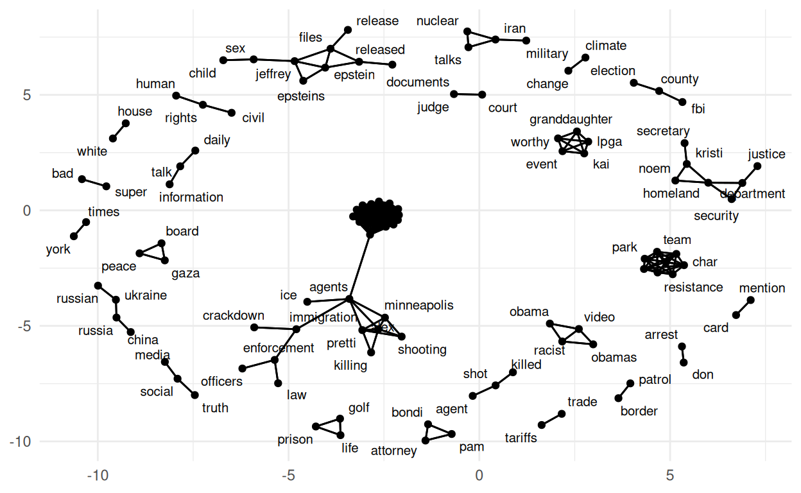

Figura 2. Análisis correlación de palabras (tokens) por redes. Cada punto corresponde a una palabra. La distancia entre puntos (en unidades arbitrarias) se corresponde con el grado de correlación entre palabras o grupos de palabras. El panel inferior corresponde a una ampliación de la nube de puntos que aparece en el centro de la imagen del panel superior.
En la Figura 2 podemos comenzar a apreciar algunos conjuntos de puntos que parecen apuntar a ciertos temas de discusión. En la parte superior del grafo vemos las palabras “epstein” y “files” asociadas con otras palabras como “sex” y “child”. Por mencionar algunos grupos de palabras, vemos también, en un conjunto, separado las palabras “iran”, “nuclear”, “talks” y “miliary”; así como “gaza”, “board” y “peace” en otro conjunto.
Vemos además una gran conjunto central que podrían estar relacionadas con agencias de noticias, otras redes sociales o encabezados sensacionalistas. Dentro de este conjunto encontramos palabras como “hottest”, “reddit”, “fediverse”, “rebreadcast”, etc. Para refinar nuestro análisis de grafos eliminamos las palabras de esta nube de puntos, y aumentamos el número mínimo de repeticiones a 110 (Figura 3).

Figura 3. Identifiación de temas de discusión generales (general topics) por análisis correlación de palabras (tokens) por redes tras la eliminación de palabras irrelevantes. Cada punto corresponde a una palabra. La distancia entre puntos (en unidades arbitrarias) se corresponde con el grado de correlación entre palabras o grupos de palabras. El color de las palabras corresponde al número de veces que aparecen en el conjunto de toots. El color de las líneas se corresponde con el grado de correlación entre las palabras.
Tras eliminar las palabras irrelevantes a aumentar ligeramente el número mínimo de repeticiones tenemos grupos de palabras que comienzan a estructurar claramente temas de discusión.
Tomando como referencia el número de publicaciones en el que aparecen las palabras, destacan las redes relacionadas con Epstein y con la agencia americana de aduanas e inmigración ICE que ya mencionamos arriba. En este último conjunto de palabras aparecen las palabras “alex”, “pretti”, “shooting” y “killing”, que se relacionan con el asesinato de Alex Pretti por parte de agentes de ICE en Minnesota, ocurrido el 24 de enero de 2026.
A nivel del grado de correlación, destaca el grupo de palabras que contiene “kai”, “granddaugther”, “worthy”, “lpga” y “event”. La palabra “lpga” corresponde a la asociación femenina de golf prfesional (Ladies Professional Golf Association, LPGA) dentro de la que participa la nieta de Donald Trump llamada Kai.
Otros temas de discusión evidentes se relacionan con Rusia, China y Ucrania; con la junta de paz de Gaza (Gaza Peace Board) y con asuntos militares y nucleares relacionados con Irán. Además, Algunos pares de palabras aislados, como “tarifs” y “trade”, o “white” y “house”, identifican otros posibles temas de discusión.
👓 El análisis de redes nos ha permitido identificar claramente algunos temas de discusión… ¿Pero podemos ir más allá? ¿Podemos identificar subtemas utilizando análisis de redes?
El caso de Jeffrey Epstein
Ya hemos visto que la palabra Epstein no solo es la más común en nuestro conjunto de toots, sino que además, el análisis de redes a señalado a esta palabra como un nodo importante de un tema de discusión.
Para identificar subtemas, filtramos todos aquellos toots que contienen la palabra Epstein (1136 toots) y repetimos el análisis de redes (Figura 4). A través de ensayo y error, ajustamos los parámetros del grafo a un mínimo de 30 repeticiones, y un nivel de correlación de 0.27, para encontrar un balance entre el número de nodos y la claridad de las relaciones entre ellos.
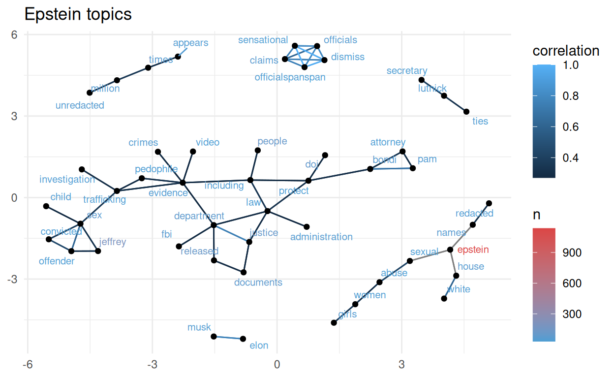
Figura 4. Identificación de temas de discusión (topics) por análisis correlación de palabras (tokens) por redes, utilizando únicamente los toots que contienen la palabra “epstein”. Cada punto corresponde a una palabra. La distancia entre puntos (en unidades arbitrarias) se corresponde con el grado de correlación entre palabras o grupos de palabras. El color de las palabras corresponde al número de veces que aparecen en el conjunto de toots. El color de las líneas se corresponde con el grado de correlación entre las palabras.
En la Figura 4 podemos identificar claramente algunos subtemas de discusión. En un conjunto de puntos aparece el nombre de Epstein relacionado con la Casa Blanca y el abuso sexual de mujeres y niños. Dentro de otro conjunto encontramos el nombre de la Fiscal General Pam Bondi quien lleva el caso Epstein y que a través del departamento de justicia de Estados Unidos sacó a la luz millones de documentos de la red de tráfico sexual y pedofilia que revelan lazos entre el fallecido Jeffrery Epstein y personalidades como Elon Musk, el secretario de comercio estadounidense Howard Lutnick
El asesinato de Alex Pretti por agentes de ICE
Ya vimos que la palabra “ICE” (la agencia americana de aduanas e inmigración) tiene también cierto protagonismo en nuestra nube de palabras (Figura 1) y es además la segunda más común en el conjunto de publicaciones, con 1073 toots. Al igual que la palabra “Epstein”, “ICE” representa un tema de discusión independiente en nuestro análisis de redes (Figura 3).
Para identificar subtemas, filtramos aquellos toots que contienen la palabra ICE y repetimos el análisis de redes (Figura 5). A través de ensayo y error, ajustamos los parámetros del grafo a un mínimo de 30 repeticiones, y un nivel de correlación de 0.3, para encontrar un balance entre el número de nodos y la claridad de las relaciones entre ellos.

Figura 5. Identificación de temas de discusión (topics) por análisis correlación de palabras (tokens) por redes, utilizando únicamente los toots que contienen la palabra “ICE” (las siglas de la agencia americana de aduanas e inmigración). Cada punto corresponde a una palabra. La distancia entre puntos (en unidades arbitrarias) se corresponde con el grado de correlación entre palabras o grupos de palabras. El color de las palabras corresponde al número de veces que aparecen en el conjunto de toots. El color de las líneas se corresponde con el grado de correlación entre las palabras.
En la Figura 5 podemos identificar claramente algunos subtemas. Junto al nombre de Alex Pretti aparece el nombre de Renee (Good), otra ciudadana de Minnesota asesinada por agentes de ICE apenas dos semana antes que Alex Pretti. En la Figura 5 podemos identificar a la agencia ICE con protestas, derechos políticos y “maga”. MAGA (Make America Great Again) es un movimiento nativista ligado al Partido Republicano americano que ha sido acusado de homofobia, racismo y sexismo, que ha salido en defensa de las acciones de los agentes de ICE, a pesar de la evidencia en vídeo del uso de violencia letal no justificada por su parte. El nombre Kristi Noem, la octava secretaria del Departamento de Seguridad Nacional, el organismo encargado de supervisar a la agencia ICE.
⚗️ El análisis de redes nos ha permitido identificar claramente temas y subtemas de discusión asociados a las palabras más comunes dentro de nuestro conjunto de 20,000 toots, todos relacionados con Donald Trump… ¡Estupendo! Pero… ¿Podemos explorar la cara emocional de estos toots? ¿Tal vez incluso la cara emocional de cada tema?…
💖 Análisis de sentimientos
Para poder explorar las em yoociones asociadas a los temas de discusión utilizamos los llamados “diccionarios de sentimientos”. Estos son tablas de palabras a las que se les ha asociado un aspecto emocional. En un diccionario de sentimientos básico, cada palabra del diccionario está etiquetada como “positiva” o “negativa”; por ejemplo, bueno - positivo, malo - negativo. En diccionarios más complejos, además de la etiqueta “positiva” o “negativa” cada palabra tiene asociada una emoción, como confianza, dicha, asco o ira.
Para este análisis trabajamos con dos diccionarios para la lengua inglesa:
El diccionario Bing, que categoriza las palabras de forma binaria en positivas y negativas, con un total de 6783 palabras etiquetadas.
El diccionario NRC, que además de clasificar las palabras como positivas o negativas, las asocia con ocho emociones básicas según Plutchik (ira, miedo, anticipación, confianza, sorpresa, tristeza, alegría y asco), con un total de 6453 palabras etiquetadas.
Ambos diccionarios de sentimientos incluyen sustantivos, adjetivos, verbos y adverbios. Para explorar mejor las emociones asociadas al conjunto te toots, aplicamos un filtra al conjunto de tokens para recuperar únicamente aquellos que corresponden a adjetivos, ya que esta categoría de palabras tiene mayor contenido emocional que los sustantivos.
La lista de adjetivos que usamos para recuperar los adjetivos contenidos en nuestro conjunto de toots contiene un total de 4840 palabras. Tras aplicar este filtro, obtenemos un total de 34,264 tokens provenientes de 10,997 toots.
Polos opuestos
Tras etiquetar cada uno de los adjetivos de nuestros toots como “positivos” o “negativos”, según el diccionario Bing, creamos dos nubes de palabras. Una partiendo de los adjetivos “positivos” (4393 tokens, Figura 6) y otra de los “negativos” (6492 tokens, Figura 7).
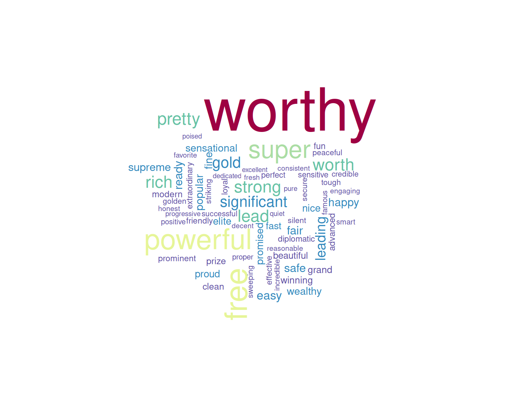
Figura 6. Nube de adjetivos “positivos” en publicaciones de Mastodon (mastodon.social) comprendidas entre el 25 de enero y el 19 de febrero de 2026, relacionadas con Donald Trump. El tamaño de las palabras se corresponde con la frecuencia con la que aparecen en el conjunto de publicaciones.
Figura 7. Nube de adjetivos “positivos” en publicaciones de Mastodon (mastodon.social) comprendidas entre el 25 de enero y el 19 de febrero de 2026, relacionadas con Donald Trump. El tamaño de las palabras se corresponde con la frecuencia con la que aparecen en el conjunto de publicaciones.
Es importante tener en cuenta que, aunque las Figuras 6 y 7 contienen los calificativos más comunes asociados a los toots relacionados con Donald Trump, ésto no significa que estén siendo usados para calificarlo a él directamente. Las Figuras 6 y 7 son simplemente un panorama de los calificativos “positivos” y “negativos” más comunes utilizados para hablar de distintos temas (Figuras 3-5).
Ampliamos la gama emocional
Podemos profundizar un poco más en los aspectos emocionales de estos toots, utilizando el diccionario de sentimientos NRC, asociando a cada token una de las ocho emociones básicas: ira, miedo, anticipación, confianza, sorpresa, tristeza, alegría y asco. La Figura 8 muestra el número de adjetivos asociados a cada una de estas emociones dentro del conjunto de toots.
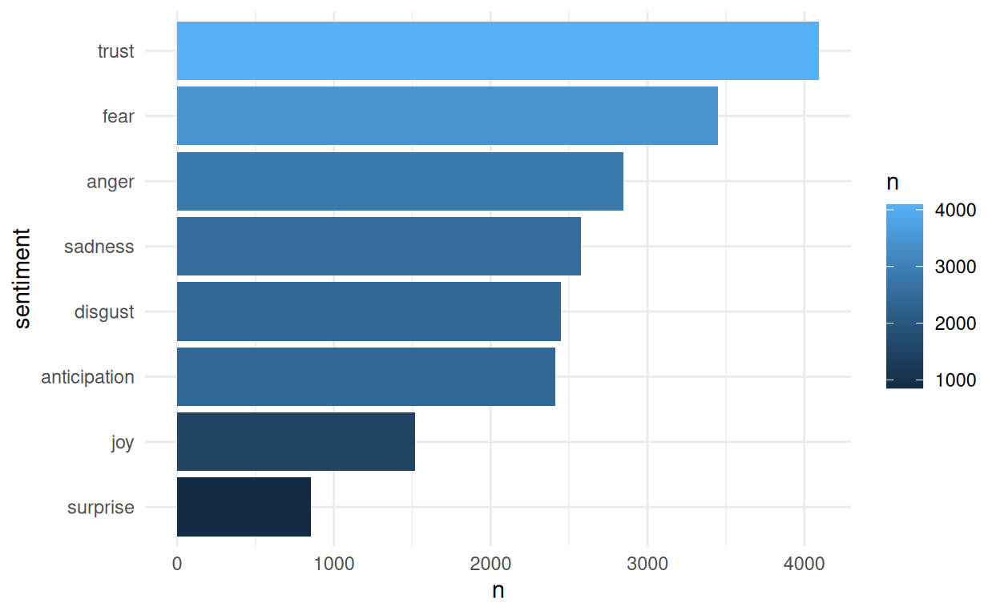
Figura 8. Frecuencia de adjetivos asociados a cada una de las 8 emociones básicas de Plutchik, en publicaciones de Mastodon (mastodon.social) comprendidas entre el 25 de enero y el 19 de febrero de 2026, relacionadas con Donald Trump. Trust, confianza; fear, miedo; anger, ira; sadness, tristeza; disgust, asco; anticipation, anticipación; joy, alegría; surprise, sorpresa.
La figura 8 muestra que, partiendo de los adjetivos, las emociones más comunes en los toots fueron la confianza (trust) y el miedo (fear).
Identificación de temas relacionados con la confianza 🫱🏽🫲🏿 y el miedo 🧟
Nuestro primer paso fue identificar aquellos toots en los que aparecieran los 20 adjetivos más comunes asociados a la confianza y el miedo; la lista de estos adjetivos se muestra en la Tabla 3.
Tabla 3. Lista de los 20 adjetivos más comunes asociados a las emociones de confianza o miedo | |||
|---|---|---|---|
Confianza | n_conf | Miedo | n_miedo |
worthy | 351 | bad | 251 |
united | 336 | military | 241 |
real | 231 | powerful | 155 |
official | 163 | criminal | 152 |
legal | 155 | accused | 116 |
powerful | 155 | illegal | 97 |
secret | 91 | dangerous | 89 |
economy | 89 | violent | 86 |
personal | 86 | warning | 86 |
pretty | 83 | worse | 75 |
true | 81 | aggressive | 67 |
moral | 76 | fatal | 65 |
level | 66 | threatening | 65 |
confirmed | 61 | evil | 61 |
leading | 61 | medical | 53 |
constitutional | 56 | brutal | 45 |
committed | 53 | broken | 44 |
medical | 53 | terrible | 42 |
obvious | 53 | foul | 40 |
accountable | 50 | ill | 39 |
Identificamos 2040 toots que contienen alguna de las palabras asociadas a confianza (con un total de 66,779 tokens) y 1634 toots que contienen alguna de las palabras asociadas a miedo (con un total de 60,062 tokens). Tras aislar estos dos conjuntos de toots, identificamos los temas de discusión contenidos en ellos a través de un análisis de redes (Figuras 9 y 10).

Figura 9. Identificación de temas de discusión (topics) por análisis correlación de palabras (tokens) por redes, utilizando únicamente los toots que contienen adjetivos asociados a confianza (trust). Cada punto corresponde a una palabra. La distancia entre puntos (en unidades arbitrarias) se corresponde con el grado de correlación entre palabras o grupos de palabras. El color de las palabras corresponde al número de veces que aparecen en el conjunto de toots. El color de las líneas se corresponde con el grado de correlación entre las palabras.
La Figura 9 muestra claramente un conjunto de palabras relacionado con la participación de Kai trump, nieta de Donald Trump, en la liga femenina de golf que mencionamos arriba. Este conjunto de palabras contiene las palabras más comunes y con el más alto grado de correlación dentro de todos los toots asociados al sentimiento de confianza.
La Figura 9 muestra también un conjunto aislado de palabras relacionado con la agencia ICE, cuyos agentes abatieron tiros a un ciudadano americano a finales de enero de 2026 de forma aparentemente injustificada. Resulta entonces un tanto paradójico que este tema parezca relacionado con sentimientos de confianza.
Cuando identificamos los subtemas asociados al asesinato de Alex Pretti (Figura 5), apareció el término MAGA (Make America Great Again), movimiento que ha defendido la actuación de los agentes de ICE. La presencia de MAGA dentro de los subtemas de discusión asociados a Alex Pretti podría explicar por qué este tema de aparece relacionado a la confianza en la Figura 9. Por otra lado, la Tabla 3 contiene palabras como “official”, “legal”, “constitutional”, “economy”, “personal”, etc., que podrían asociarse de forma neutral a cualquiera de las palabras que componen el conjunto más grande de palabras de la Figura 9, puesto que muchas de ellas tiene un carácter puramente administrativo.
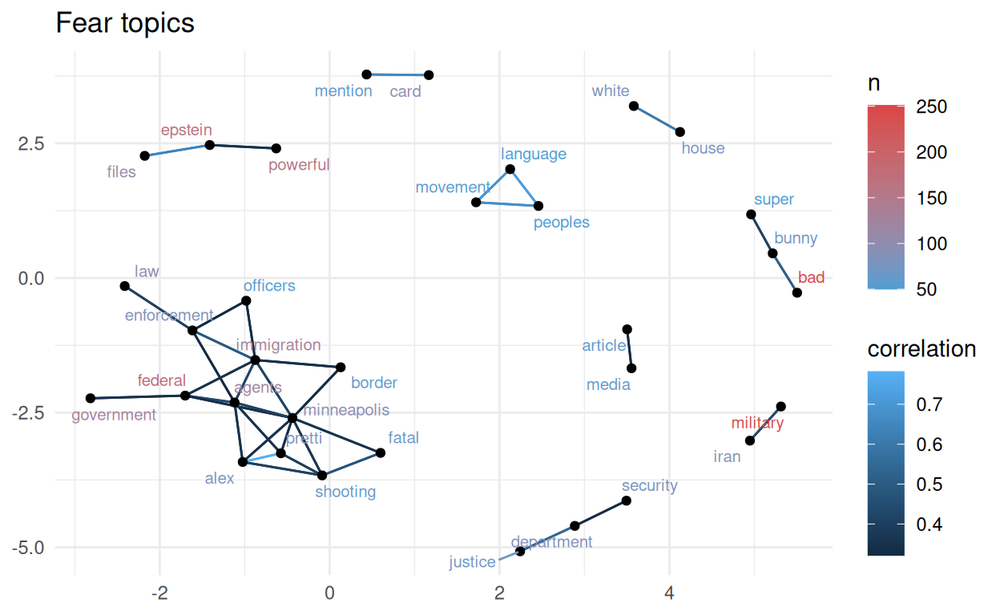
Figura 10. Identificación de temas de discusión (topics) por análisis correlación de palabras (tokens) por redes, utilizando únicamente los toots que contienen adjetivos asociados al miedo (fear). Cada punto corresponde a una palabra. La distancia entre puntos (en unidades arbitrarias) se corresponde con el grado de correlación entre palabras o grupos de palabras. El color de las palabras corresponde al número de veces que aparecen en el conjunto de toots. El color de las líneas se corresponde con el grado de correlación entre las palabras.
La Figura 10 identifica tres al menos temas de discusión asociados con miedo: el asesinato de Alex Pretti, Irán y Jeffrey Epstein. Aparece además un nuevo subtema con las palabras “bad”, “bunny” y “super”, que podría hacer referencia a la controvertida actuación del rapero Bad Bunny en el Super Bowl el 9 de febrero. Bad Bunny ha sido un crítico de la administración de Donald Trump y de la agencia ICE. Los simpatizantes de Trump, por su parte, lo consideran un personaje anti-americano.
📺 El análisis de sentimientos, combinado con el análisis de redes, nos ha permitido identificar claramente nuevos temas de discusión, así como las emociones asociadas a ellos. Pero… ¿podemos evaluar la evolución de los sentimientos a lo largo del tiempo?…
🗓️ Evolución de sentimientos a lo largo del tiempo
Para evaluar la evolución de sentimientos a lo largo del tiempo, volvemos a hacer uso del diccionario Bing y la lista de adjetivos extraídos de nuestro conjunto de toots.
El diccionario Bing etiqueta cada palabra como “positiva” o “negativa”. Asignando el valor de +1 a cada uno de los calificativos “positivos” y un valor de -1 a los “negativos” podemos extraer una métrica de la “carga emocional” de un determinado conjunto de toots; en nuestro caso, la media.
Para evaluar la evolución de la carga emocional de los toots en el tiempo, los agrupamos por fecha de publicación, usando un día como unidad de tiempo. La Figura 11 muestra el valor medio de la carga emocional de los toots para cada día del análisis.
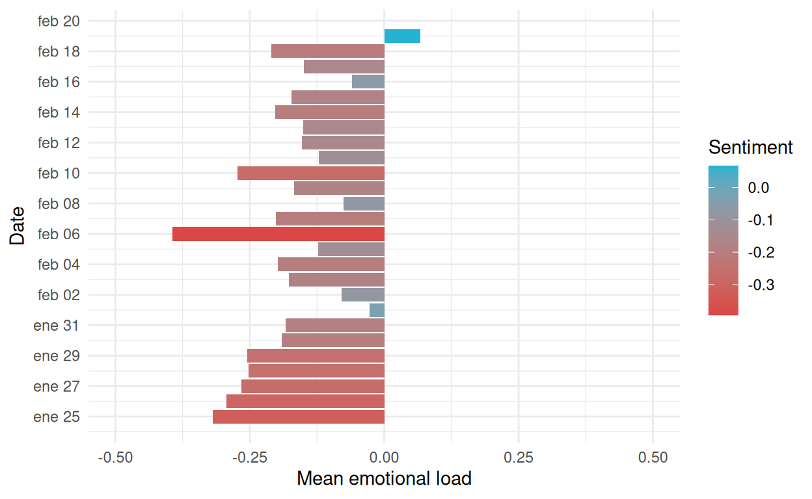
Figura 11. Análisis de la carga emocional de los toots publicados cada día entre el 25 de enero y el 19 de febrero de 2026 (Date). Cada uno de los adjetivos contenidos en el conjunto total de toots fué etiquetado como “positivo” o “negativos” de acuerdo al diccionario de sentimientos Bing. A los calificativos positivos se les asignó el valor de +1 y a los negativos -1 y posteriormente se calculó la media (Mean emotional load). El color de las barras corresponde avalor de la carga emocional; los valores negativos tienden al rojo y los positivos al azul.
La Figura 11 muestra que, excepto por el 19 de febrero, la carga emocional contenida en los toots de cada día de análisis es negativa. Destacan el 25 de enero y el 6 de febrero como las fechas con la carga emocional más negativa y el 19 de febrero como el único día con una carga emocional positiva.
📆 Analizar la carga emocional asociada a los toots a lo largo del tiempo nos he permitido identificar respuestas emocionales positivas o negativas en fechas concretas… ¿Podemos asociar esas respuestas emocionales a eventos concretos?…
Enero 25
El número de toots recuperados del 25 de enero fue de 251, con 5269 tokens. La Figura 12 muestra los temas de discusión del 25 de enero a través del análisis de redes. Al igual que con los gráficos de redes anteriores, a través de ensayo y error, ajustamos el número mínimo de repeticiones a 10 repeticiones y el nivel de correlación a 0.35.
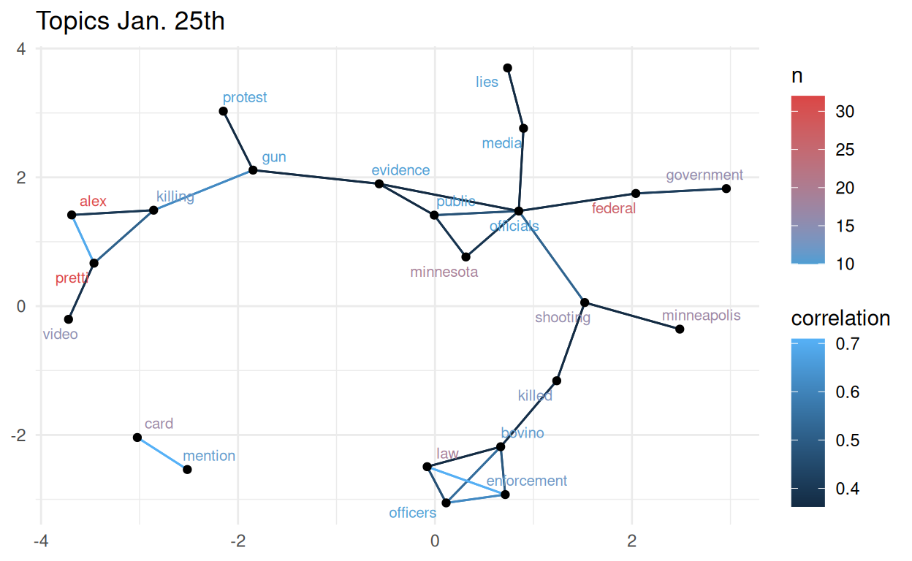
Figura 12. Identificación de temas de discusión (topics) por análisis correlación de palabras (tokens) por redes, utilizando únicamente los toots publicados el 25 de enero (Jan. 25th) de 2026. Cada punto corresponde a una palabra. La distancia entre puntos (en unidades arbitrarias) se corresponde con el grado de correlación entre palabras o grupos de palabras. El color de las palabras corresponde al número de veces que aparecen en el conjunto de toots. El color de las líneas se corresponde con el grado de correlación entre las palabras.
En la Figura 12 , el tema de discusión que emerge es, nuevamente, el asesinato de Alex Pretti, lo que no resulta en modo alguno sorprendente, ya que este hecho ocurrió precisamente el 24 de enero.
También podemos visualizar la cara emocional de los toots publicados en esta fecha, utilizando los tokens correspondientes a los adjetivos contenidos en ellos (Figura 13).

Figura 13. Nube de adjetivos contenidos en las publicaciones de Mastodon (mastodon.social) del 25 de enero de 2026, relacionadas con Donald Trump. El tamaño de las palabras se corresponde con la frecuencia con la que aparecen en el conjunto de publicaciones.
A pesar de la subjetividad subyacente en la interpretación de cualquier hecho que tenga un componente emocional, podríamos decir que los calificativos usados para hablar de los hechos relacionados con Alex Pretti se corresponden con la naturaleza de los propios hechos.
Febrero 6
El número de toots recuperados del 06 de febrero fue de 737, con 13,098 tokens. La Figura 14 muestra los temas de discusión del 6 de febrero a través del análisis de redes.Al igual que con los gráficos de redes anteriores, a través de ensayo y error, ajustamos el número mínimo de repeticiones a 15 repeticiones y el nivel de correlación a 0.35.
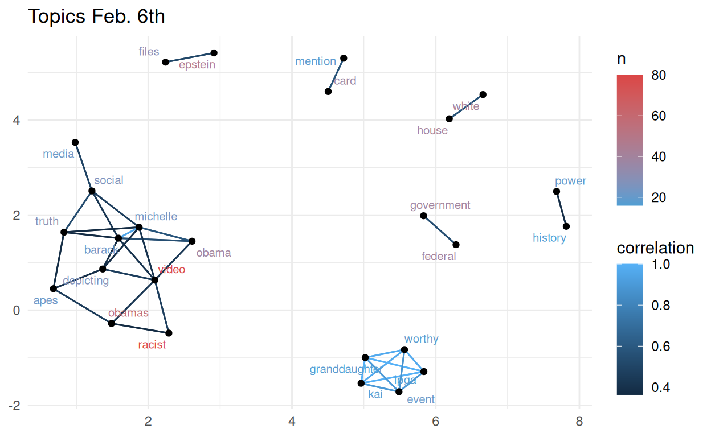
Figura 13. Identificación de temas de discusión (topics) por análisis correlación de palabras (tokens) por redes, utilizando únicamente los toots publicados el 6 de febrero (Feb. 6th) de 2026. Cada punto corresponde a una palabra. La distancia entre puntos (en unidades arbitrarias) se corresponde con el grado de correlación entre palabras o grupos de palabras. El color de las palabras corresponde al número de veces que aparecen en el conjunto de toots. El color de las líneas se corresponde con el grado de correlación entre las palabras.
En la Figura 13 se distinguen claramente dos temas de discusión, uno que contiene las palabras más comunes dentro del conjunto de toots (“video”, “obamas”, “racist”) y otro relacionado con Kai Trump y su participación en la liga femenina de golf que ya hemos mencionado antes. La partipación de Kai Trump en esta liga se anunció precisamente en esta fecha.
Tras una sencilla búsqueda en Internet usando los términos “video”, “obamas” y “racist” encontramos la publicación y eliminación posterior de un vídeo publicado en las redes sociales de Donald Trumpen donde el expresidente americano Barak Obama y su esposa, ambos afroamericanos, aparecían retratados como simios.
Podemos visualizar la cara emocional de los toots publicados en esta fecha, utilizando los tokens correspondientes a los adjetivos contenidos en ellos (Figura 14).

Figura 14. Nube de adjetivos contenidos en las publicaciones de Mastodon (mastodon.social) del 6 de febrero de 2026, relacionadas con Donald Trump. El tamaño de las palabras se corresponde con la frecuencia con la que aparecen en el conjunto de publicaciones.
La Figura 14 muestra una nube de palabras dominada por el calificativo “racist”, lo que sugiere una respuesta emocional coherente con contenido del controvertido vídeo publicado en esta fecha.
Febrero 19
El número de toots recuperados del 19 de febrero fue de 192, con apenas 3276 tokens. La Figura 15 muestra los temas de discusión de esta fecha a través del análisis de redes.Al igual que con los gráficos de redes anteriores, a través de ensayo y error, ajustamos el número mínimo de repeticiones a 7 repeticiones y el nivel de correlación a 0.27.

Figura 15. Análisis correlación de palabras (tokens) por redes utilizando únicamente los toots publicados el 19 de febrero de 2026. Cada punto corresponde a una palabra. La distancia entre puntos (en unidades arbitrarias) se corresponde con el grado de correlación entre palabras o grupos de palabras. El color de las palabras corresponde al número de veces que aparecen en el conjunto de toots. El color de las líneas se corresponde con el grado de correlación entre las palabras.
En la Figura 14 se distinguen claramente tres temas de discusión; uno de ellos relacionado con Irán, otro con la nieta de Donald Trump (a quien ya hemos mencionado arriba), otro de ellos relacionado con la junta de paz en Gaza y otro con el gobierno federal.
Una búsqueda de noticias en Internet utilizando los términos “Donald Trump” y “news” acotada al 19 de febrero nos revela que en esta fecha, el presidente americano dio un discurso en la primera reunión de la Junta de Paz en Gaza, desde donde envió un ultimátum al gobierno de Irán. Advirtió que “pasarían cosas malas“ si el gobierno de Irán no accede a reducir significativamente su programa de armas nucleares. Esta advertencia fue lanzada al tiempo que Estados Unidos acumulaba una presencia militar masiva en la región en preparación para un ataque potencial, mismo que comenzó el 28 de febrero.
Al igual que antes, podemos visualizar la cara emocional de los toots publicados en esta fecha, utilizando los tokens correspondientes a los adjetivos contenidos en ellos (Figura 16).

Figura 16. Nube de adjetivos contenidos en las publicaciones de Mastodon (mastodon.social) del 19 de febrero de 2026, relacionadas con Donald Trump. El tamaño de las palabras se corresponde con la frecuencia con la que aparecen en el conjunto de publicaciones.
La Figura 16 muestra una nube de palabras dominada por el calificativo “worthy” (digno), e incluye palabras como “authoritarian” (autoritario), “wise” (sabio), y “diplomatic” (diplomático), que tienen una connotación positiva.
❤️ 😡 El análisis de redes nos ha permitido identificar los temas de discusión asociados a temas de discusión que generaron una fuerte respuesta emocional en fechas concretas; las nubes de palabras, por su parte, nos permitieron identificar las emociones asociadas a estas respuestas. 🚀
🏷️ Clasificación de toots
En las secciones anteriores, hemos podico identificar temas de discusión asociados a emociones concretas como la confianza y el miedo y hemos podido identificar respuestas emocionales a eventos concretos a lo largo del tiempo. Ahora nos preguntamos si podemos clasificar los toots relacionados con Donald Trump, con base en su contenido emocional.
Para abordar esta pregunto hacemos otra vez uso del diccionario de sentimientos NRC, asignando a cada adjetivo al menos una de las emociones básicas de Plutchik (Figura 8). Para cada toot, contamos el número de adjetivos correspondiente a cada emoción, así como en número total de tokens en cada toot; la Tabla 4 muestra algunos de los toots con más de 50 tokens.
Tabla 4. Número de adjetivos asociados a cada emoción en cada toot | |||||||||
|---|---|---|---|---|---|---|---|---|---|
toot No. | confianza | miedo | dicha | ira | anticipación | sorpresa | asco | tristeza | No. de tokens |
115956868279924062 | 1 | 0 | 1 | 0 | 0 | 0 | 0 | 0 | 52 |
115957091251021997 | 2 | 6 | 1 | 3 | 1 | 2 | 5 | 2 | 101 |
115957194868532631 | 12 | 12 | 4 | 8 | 7 | 5 | 3 | 3 | 522 |
115957286675732482 | 1 | 7 | 0 | 4 | 1 | 1 | 3 | 5 | 242 |
115957619685651706 | 7 | 2 | 1 | 2 | 3 | 1 | 3 | 1 | 313 |
115958338656493586 | 0 | 3 | 0 | 2 | 2 | 1 | 2 | 1 | 219 |
115958355217704577 | 0 | 1 | 1 | 2 | 0 | 0 | 0 | 2 | 54 |
115960581898528610 | 2 | 0 | 2 | 0 | 2 | 1 | 1 | 2 | 75 |
115961119580722988 | 3 | 0 | 1 | 1 | 2 | 0 | 1 | 1 | 103 |
115961150632094656 | 1 | 1 | 0 | 1 | 1 | 0 | 1 | 1 | 119 |
Antes de poder abordar la clasificación debemos crear una métrica ad hoc (índice de carga emocional, IdCE)que nos permita valorar el contenido emocional de cada toot en función de su extensión. Por ejemplo, un toot de 10 palabras en las que 2 pertenecen a la emoción “ira” debe tener un peso mayor que un toot de 120 palabras en las que 2 pertenecen a la misma emoción. Para ello, multiplicamos en número de tokens asociados a cada emoción por su proporción con respecto al total. De esta forma, un toot de 10 palabras, de las cuales 2 están asociadas a la ira, tendría un IdCE de ira = 2 x (2/10) = 0.4, un toot de 100 palabras con 20 asociadas a la ira tendría un IdCE de ira = 20 x (20/100) = 4 y un un toot de 200 palabras con 20 asociadas a esta emoción tendría un IdCE de ira = 20 x (20/200) = 2.
Tras haber calculado los IdCe de cada emoción para cada uno de los toots creamos un gráfico tipo mapa de calor (heatmap tipo parrila), aplicando un análisis de agrupación de los toots por K-medias con un valor de k = 3 (tres grupos esperados; ver nuestro post “Decisiones difíciles”), así como una agrupación jerárquica de las emociones (Figura 17).
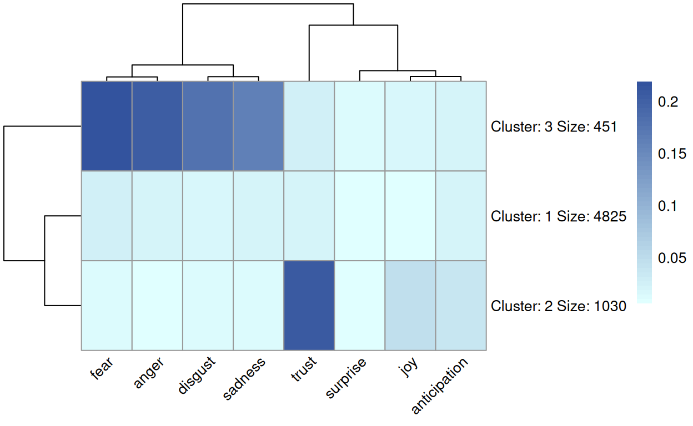
Figura 17. Mapa de calor del índice de carga emocional (IdCE) para cada una de las emociones en toots agrupados (clusters). Los toots se agruparon utilizando el algoritmo de aprendizaje automático K-medias; la la derecha del gráfico se muestra el número de toots (size) que corresponde a cada k-grupo (cluster). Se aplicó además un análisis de agrupación jerárquico para las emociones. La intensidad del color se corresponde con valores más altos de IdCE. Fear, miedo; anger, ira; disgust, asco; sadness, tristeza; trust, confianza; surprise, sorpresa; joy, dicha; anticipation, anticipación.
La Figura 17 muestra claramente una agrupación de los toots en función de la naturaleza de las emociones y el valor de IdCE asociado a cada toot para cada una de ellas. Así, el k-grupo 3 (el más pequeño, con 451 toots) se caracteriza por tener un IdCE alto para todas las emociones “negativas” (miedo, ira, asco y tristeza). El k-grupo 1 (el más extenso, con 4825 toots) no parece tener una carga emocional concreta. E k-grupo 2, en contraste, parece tener una carga emocional muy grande, asociada principalmente a la confianza.
A continuación, realizamos un análisis de temas de discusión por redes para cada uno de los k-grupos (Figura 18)
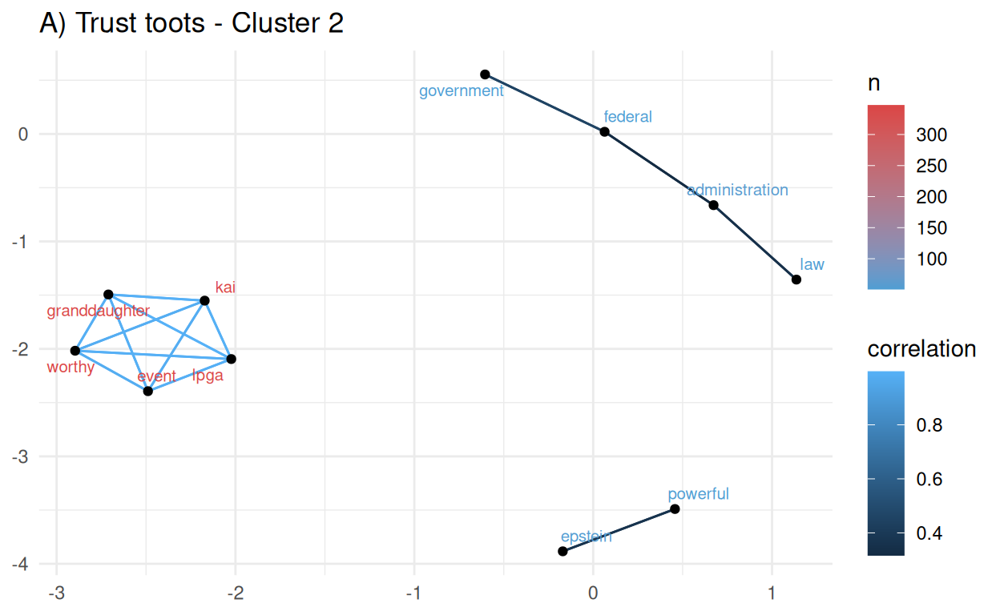
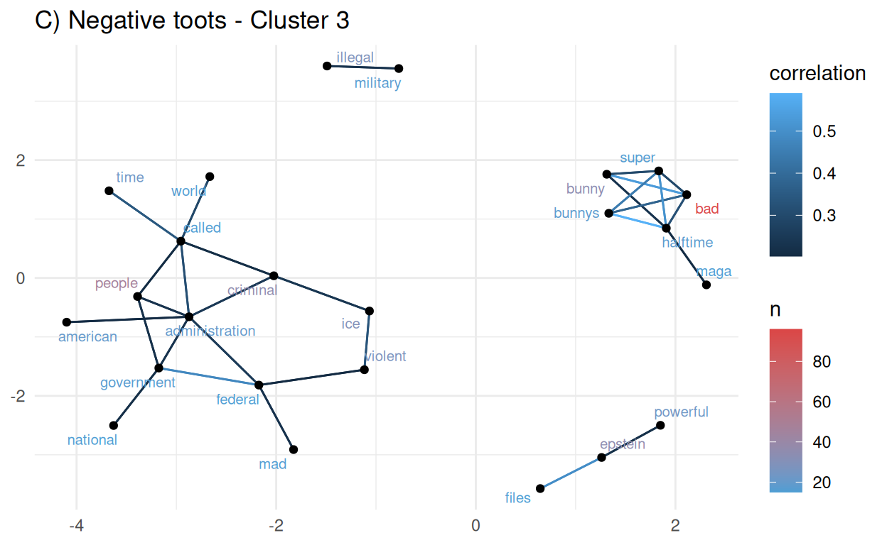
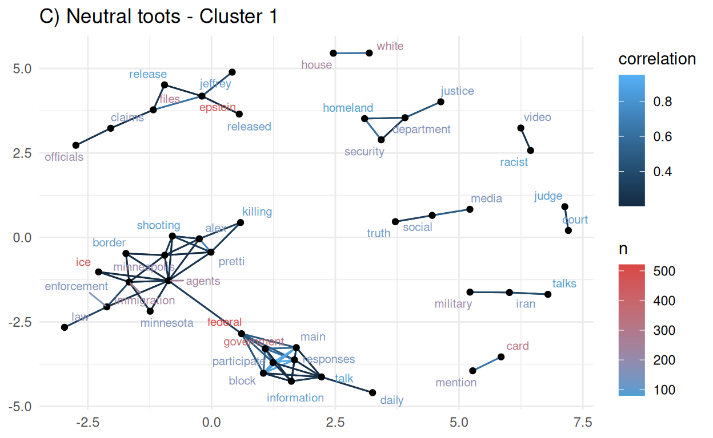
Figura 18. Análisis correlación de palabras (tokens) por redes utilizando los toots correspondientes a los k-grupos (clusters)identificados a través del índice de carga emocional (IdCE) usando el algoritmo de aprendizaje automático K-medias. A) toots del k-grupo 3 caracterizado por IdCE de confianza alto, B) toots del k-grupo 2 caracterizado por IdCEs altos para todas las emociones “negativas” (miedo, ira, asco y tristeza), C) toots del k-grupo 1 que carece de una carga emocional concreta. Cada punto corresponde a una palabra. La distancia entre puntos (en unidades arbitrarias) se corresponde con el grado de correlación entre palabras o grupos de palabras. El color de las palabras corresponde al número de veces que aparecen en el conjunto de toots. El color de las líneas se corresponde con el grado de correlación entre las palabras.
🔍 “El hombre fuerte asesinado por agentes federales en Minneapolis estaba sosteniendo un teléfono, no una pistola The New York Timesstronga aDavid Guttenfelder The New York TimesUnrestinar en MinneapolisCompartir un tiroteo actualizado de Alex Jeffrey Prettialilia Quién fue bonito?alalil Timelinealilia Video Analysisalilia Trumps Responsealilia Shooting of ReneeGoodaliulstrongMan asesinado por agentes federales en Minneapolis estaba sosteniendo un teléfono, ni un GunstrongstrongVideos analizados por The New York Times parecen contradecir los relatos federales del tiroteo. El hombre, un enfermero de I.C.U., era un ciudadano estadounidense sin antecedentes penales, dijo el jefe de la policía de la ciudad. 24, 2026, Actualizado en enero. 25, 2026, 1211 p.m. ETa aa VIDEO ANALYSISa a.Funcionarios oficiales trataron de retratar a un residente de Minneapolis de 37 años asesinado por agentes de la Patrulla Fronteriza el sábado como un terrorista doméstico, diciendo que quería masacrar a las fuerzas del orden, incluso cuando surgieron videos que parecían contradecir directamente su relato.El hombre, Alex Jeffrey Pretti, era una enfermera de cuidados intensivos descrita por el jefe de policía de Minneapolis como un ciudadano estadounidense sin antecedentes penales. Funcionarios federales dijeron que estaba armado, pero no hay señal en videos analizados por The New York Times que tiró de su arma, o que los agentes incluso sabían que tenía una hasta que ya estaba atrapado en la acera. La pistola blinda cuando otros dos agentes abrieron fuego, disparándole por la espalda y mientras yacía en el suelo. Al menos 10 disparos fueron disparados, matándolo. Sr. Pretti tenía un permiso legal para portar un arma de fuego, dijo el jefe de policía, Brian OHara.El tiroteo en una mañana frígida en el barrio de Minneapolis Whittier renovó protestas y enfrentamientos con las fuerzas del orden en una ciudad donde las tensiones han llegado a un punto de ruptura después de semanas de una agresiva acción federal de inmigración. Agentes federales desplegaron gases lacrimógenos y golpes de flash para alejar a los manifestantes de la escena del tiroteo mientras exigían que agentes de la policía local arrestaran a los agentes que mataron al Sr. Los funcionarios dijeron que las protestas en Minneapolis habían permanecido en su mayoría pacíficas, con algunas excepciones. Pero al caer el atardecer, los funcionarios desplegaron la Guardia Nacional para asegurarse de que las manifestaciones no se tornaran violentas. Al menos 1.000 personas acudieron a una vigilia para Mr. Pretti en Whittier Park el sábado por la noche, a pesar de las temperaturas bajo cero.Un colega de Mr. Pretti, Dimitri Drekonja, dijo que había trabajado como enfermera en el hospital de Asuntos de Veteranos en Minneapolis. Era un gran colega y un gran amigo, Sr. Drekonja dijo. La mirada predeterminada en su cara era una sonrisa.strongHeres lo que estaban cubriendotrongullistrongVideo analysisstrong Video video publicado en las redes sociales y verificado por The Times muestra Mr. Pretti entre una mujer y un agente que la roció. Otros agentes luego rocian con pimienta Mr. Pretti, que sostiene un teléfono en una mano y nada en la otra. Su arma permanece oculta hasta que los agentes federales la encuentran y se la quitan. La carga fija o abierta es legal para los titulares de permisos en Minnesota. Pretti pretendía atacar a agentes federales. Gregory Bovino, el funcionario a cargo de las operaciones de los presidentes de la Patrulla Fronteriza, dijo que el Sr. Pretti estaba decidido a una masacre. Kristi Noem, secretario de Seguridad Nacional, dijo, Esto parece una situación en la que un individuo llegó al lugar para infligir el máximo daño. Sus relatos contradicen directamente las pruebas de video del encuentro.Un Leer más alilistrongInvestigadores bloquearon a Drew Evans, quien encabeza la Oficina de Aprehensión Criminal de Minnesota, dijo que los agentes federales inicialmente habían prohibido a los investigadores estatales la escena del tiroteo de los sábados. Sr. Evans dijo que su agencia dio el raro paso de obtener una orden de registro para acceder a una acera pública, pero aún así estaba bloqueada. Los funcionarios federales finalmente abandonaron la escena después de chocar con los manifestantes, pero las manifestaciones habían crecido lo suficiente para ese momento como para impedir que agentes estatales investigaran.Las autoridades federales autoinvestigativas dijeron que el Departamento de Seguridad Nacional, que incluye ICE y la Patrulla Fronteriza, dirigiría la investigación federal de tiroteo, con ayuda del FBI. Pero altos funcionarios del Departamento de Seguridad Nacional y Justicia dijeron que ya estaba claro que el Sr. Alto al alcalde Jacob Frey acusó a la administración Trump de haber aterrorizado a la administración de Trump de aterrorizar a su ciudad. Cuántos estadounidenses más necesitan para morir o resultar gravemente heridos por este funcionamiento para terminar?, preguntó. Al menos otras dos personas han sido tiroteadas allí por agentes federales este mes, entre ellas Renee Good, de 37 años, quien fue asesinada en enero. 7. A Read more alilistrongForce of goodstrong Accolades llegó para Mr. Bastante de los que lo conocían. Ruth Anway, otra enfermera que trabajaba con él, describió al Sr. Bonito como un colega apasionado y amable amigo con un agudo sentido del humor. Quería ser útil, ayudar a la humanidad, y tener una carrera que fuera una fuerza de bien en el mundo, dijo. 25, 2026, 1212 a.m. ET, Jan. 25, 2026, Por un Mitch Smitha, reportero del Medio OesteLawyers para el estado de Minnesota, así como las ciudades de Minneapolis y St. Paul, renovó sus llamados el sábado por la noche para que un juez federal bloquee temporalmente el aumento de la aplicación de la ley de inmigración. Una audiencia sobre ese caso está programada para el lunes.La necesidad de ayuda de emergencia es urgente e innegable, dijeron los abogados en una carta.a aJan. 24, 2026, 1151 p.m. - ET Jan. 24, 2026a Shawn HubleraMayor Karen Bass de Los Ángeles dijo que la ciudad había presentado un escrito de amicus en una demanda federal pidiendo el cese del despliegue de agentes federales por parte de las administraciones Trump en Minneapolis y St. Paul. Esta violencia tiene que detenerse y el Presidente debe remover estas fuerzas armadas y federales de Minneapolis y otras ciudades estadounidenses, dijo en un comunicado.a clase astronga Read Bondis Carta a la gobernadora general de Minnesota Pam Bondi envió una carta al gobernador. Tim Walz, de Minnesota, el sábado que lo culpó a él y a otros funcionarios demócratas por permitir la ansia en el estado. No estaba claro de inmediato si la carta había sido enviada antes o después del tiroteo fatal de Alex Pretti.a aJan. 24, 2026, 1140 p.m. - ET Jan. 24, 2026a Mitch Smitha, reporteros del Medio Oeste Testigos describieron el tiroteo fatal en archivos de la corte.astrong Agentes federales en Minneapolis en la escena del tiroteo fatal el sábado. CreditDavid Guttenfelder The New York TimesUn médico que vive cerca de la escena donde Alex Jeffrey Pretti fue asesinado a tiros por agentes federales en Minneapolis el sábado describió en una corte jurada que los agentes inicialmente dudaron y pidieron pruebas de una licencia médica cuando el médico trató de acercarse y prestar ayuda. Y una persona que dijo que estaba parada cerca del Sr. Pretti cuestionó el relato del Departamento de Seguridad Nacional de ese incidente en otra demanda judicial jurada.El tiroteo contra el Sr. Pretti, de 37 años, renovó las protestas y enfrentamientos con las fuerzas del orden en una ciudad donde las tensiones por una agresiva acción federal de inmigración son altas. Imágenes de video del encuentro parecían contradecir partes de los gobiernos federales narrando lo sucedido, y los últimos archivos judiciales plantearon más preguntas.El doctor, cuyo nombre fue redactado de la versión pública del archivo de la corte, se describió como un pediatra y dijo que habían presenciado partes del encuentro desde un apartamento cercano. Aunque su vista era de lejos, describieron haber visto a un hombre siendo empujado al suelo y luego disparado varias veces. Después de los disparos, describieron salir, diciéndole a un agente que eran un médico y pidiendo revisar a la persona que había recibido un disparo.El médico dijo que inicialmente fueron rechazados, pero finalmente se les permitió ir a la persona después de ser acariciada.Normalmente, no habría sido tan persistente, dijo el médico en su declaración, pero como médico, sentí una obligación profesional y moral de ayudar a este hombre, especialmente porque ninguno de los agentes lo estaba ayudando.El médico describió la búsqueda de un pulso, no encontrar ninguno, y luego comenzó C.P.R. Al parecer, el hombre recibió varios disparos, dijo el médico. Poco después de que comenzó C.P.R., el personal médico de emergencia llegó y se hizo cargo, dijo el médico.a astronga Lea una declaración de Testigo en el Shootingastrong PrettiEl médico describió en un tribunal jurado cómo los agentes dudaron inicialmente cuando el médico trató de acercarse y prestar ayuda a Alex Jeffrey Pretti en Minneapolis el sábado.Regresando a casa mientras las protestas se intensificaban.Estaba sollozando y temblando sin control, dijeron en el comunicado.Una vez que los gases lacrimógenos comenzaron a filtrarse en su apartamento desde la calle de abajo, dijeron que se subieron a un auto y condujeron a una casa de amigos.No estoy seguro de cuándo regresaré a mi apartamento, escribió el médico. No me siento a salvo en mi ciudad.Casi inmediatamente después de que los agentes dispararon al Sr. El sábado por la mañana, funcionarios federales afirmaron que había puesto en peligro a los agentes con un arma que llevaba, y algunos lo acusaron más tarde de terrorismo doméstico.Pero videos en las redes sociales que fueron verificados por The New York Timesa parecen contradecir partes del relato del Departamento de Seguridad Nacional del tiroteo, y el jefe de policía de Minneapolis, Brian OHara, dijo que el Sr. Se cree que Pretti tiene licencia para portar legalmente un arma.Otra persona que dijo que presenció el tiroteo también presentó un…
“Sí, eso es correcto, el Departamento de Justicia de EE.UU., que ha dejado clara su lealtad última y absoluta a Donald Trump incluso en violación de la ley, acaba de eliminar el memorándum de la fiscalía del Departamento de Justicia de 86 páginas, que contiene el FBI y su Unidad de Delitos contra la Trata de Personas Niños, señala sobre los 10 co-conspiradores contra los que la Oficina estaba desarrollando un caso en 2019 antes incluso de que Epstein fuera arrestado de nuevo, de sus liberaciones de Epstein Files. Ese sería el mismo memorándum del Departamento de Justicia que expone al director del FBI, Kash Patel, como un mentiroso que se perjuró bajo juramento. Ese también sería el mismo memo de DoJ de 86 páginas que efectivamente prueba que Trump, su fiscal general Pam Bondi, y su adjunto AG Todd Blanche junto con muchas otras personas en la administración Trump están participando en una conspiración criminal para proteger a los violadores de niños ricos y poderosos, incluyendo que parece, el propio Donald Trump.profition-memo-desaishes-after-press-inpress-inquiryar-AA1VTdVA archivar a classellipsisweb.archive.orgweb20260820 2041 DOJ Epstein prosecution memo desaparece después de la investigación de la prensaUn memorándum de la fiscalía del Departamento de Justicia de 86 páginas que incluyó detalles sobre posibles co-conspiradores de Jeffrey Epstein misteriosamente desaparecidos de los DOJsDespués de que la agencia fuera preguntada sobre el documento por el Miami Herald, reveló el sábado la reportera de investigación Julie Brown.Contrary a lo que el FBI y el Departamento de Justicia han dicho durante el último año, resulta que realmente hay una lista del FBI de otras personas sospechosas de posibles irregularidades en relación con Jeffrey Epstein, Brown, quien escribe para el Herald, escribió en su Substack Saturday.Uno de los documentos que describe la DLa investigación sobre los posibles co-conspiradores de Jeffrey Epstein el memo de la fiscalía de 86 páginas de los DOJs desapareció misteriosamente del sitio web de los gobiernos esta semana después de que le preguntamos al Departamento de Justicia al respecto.El Herald publicó un informe el sábado anterior sobre el memorándum de la fiscalía, que señaló que había sido retirado desde entonces del sitio web de los DOJs en el momento de la publicación. Una copia del memo, sin embargo, fue preservada por Brown antes de su eliminación y contiene detalles sobre los posibles co-conspiradores de Epstein, aunque con sus nombres redactados.Francamente, no voy a perder mi tiempo rumiando sobre si la administración Trump entiende o no que Internet es para siempre, o cómo funciona el efecto Streisand, especialmente dado el comportamiento absolutamente cómplice de los medios corporativos estadounidenses a lo largo de la cobertura de todo el EpEscándalo, hasta al menos su primer arresto. El hecho es que la administración de Trump está llena de bootlicking nazis, compinches cómplices, y tipos que publican comentarios nacionalistas blancos en la sección de comentarios bajo manijas anónimas. Estas personas inteligentes, pero francamente no tienen que estar en un entorno mediático donde cada nueva mentira de la administración Trump sea tratada como si pudiera ser verdad, e incluso cuando se exponen como mentiras, rara vez se levantan de nuevo en esos mismos puntos de venta. El hecho es que la administración Trump acaba de retirar el documento clave que prueba que todo el Departamento de Justicia, y el presidente de los Estados Unidos, están violando la ley para encubrir un anillo pedófilo multimillonario, por una razón - y no, no es posible que la razón sea inocente. Esta es otra historia que debería ser noticia de primera plana mañana, pero podría no ser porque el memo de 86 páginas que debería derribar a toda la administración Trump en este momento, no fue noticia de primera plana en primer lugar.Puedes sentir cómo quieres sentirte, pero eso me parece bastante sospechoso supongo que los chantajistas pedófilos, multimillonarios y los medios de comunicación que poseen, tienen que seguir juntos. Grita a classh-tard una mención de classu-url por llamar mi atención esta historia hoy temprano. a Epsteina a Trumpa FBIa Departamento de EpsteinFilesabraOfJusticea a Coverupabra Billionairesa a 10Coconspiratorsa a PamBondia a ToddBlanchea”
Tabla 5. Adjetivos Relacionados con la confianza en el toot 115957194868532631 | |
|---|---|
palabra | sentimiento |
verified | trust |
legal | trust |
peaceful | trust |
official | trust |
passionate | trust |
helpful | trust |
proof | trust |
medical | trust |
professional | trust |
moral | trust |
safe | trust |
administrative | trust |
Tabla 6. Adjetivos Relacionados con la confianza en el toot 116036946032124872 | |
|---|---|
palabra | sentimiento |
engaging | trust |
powerful | trust |
true | trust |
united | trust |
innocent | trust |
pretty | trust |